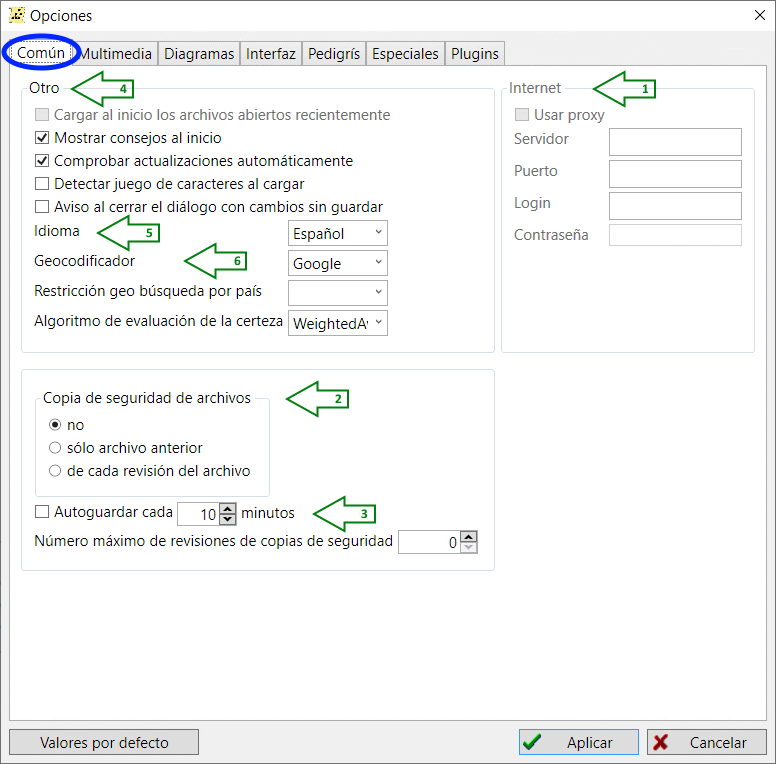
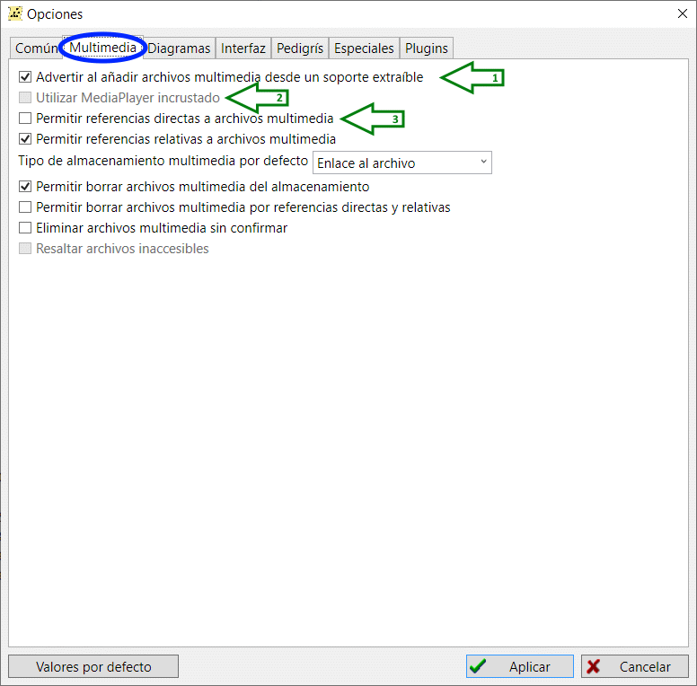
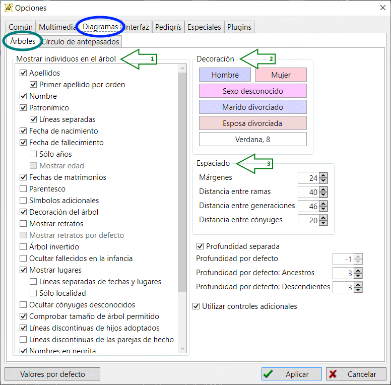
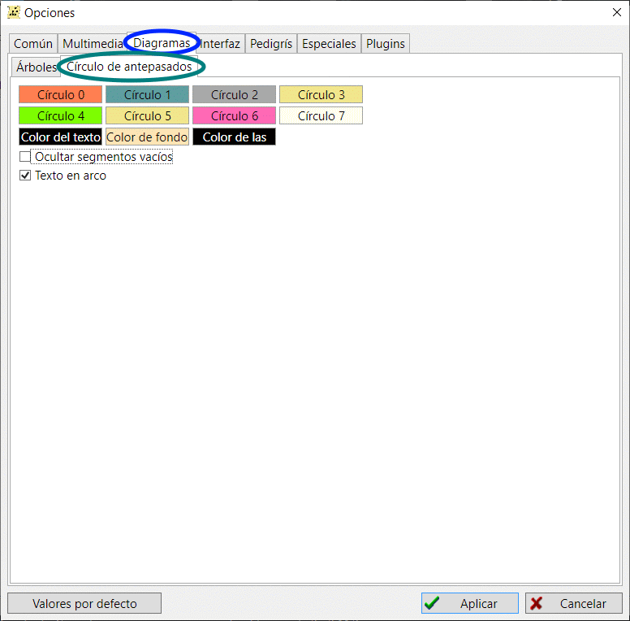
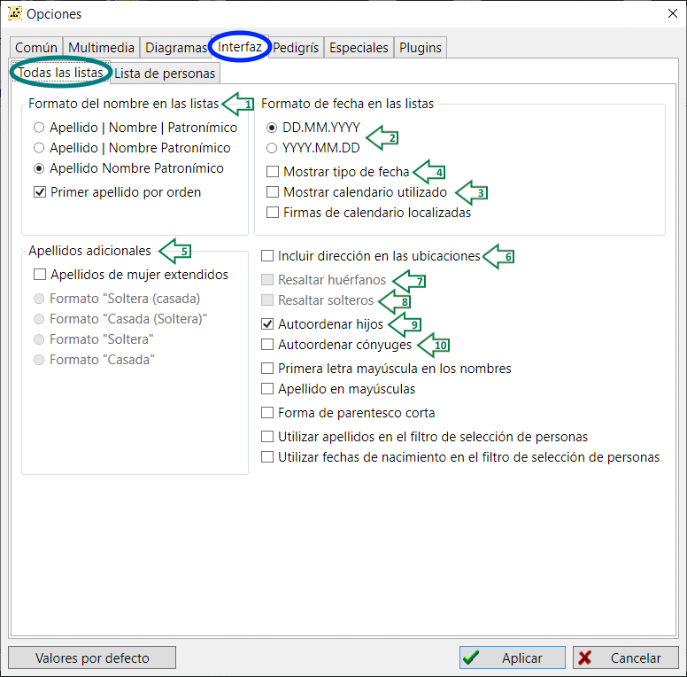
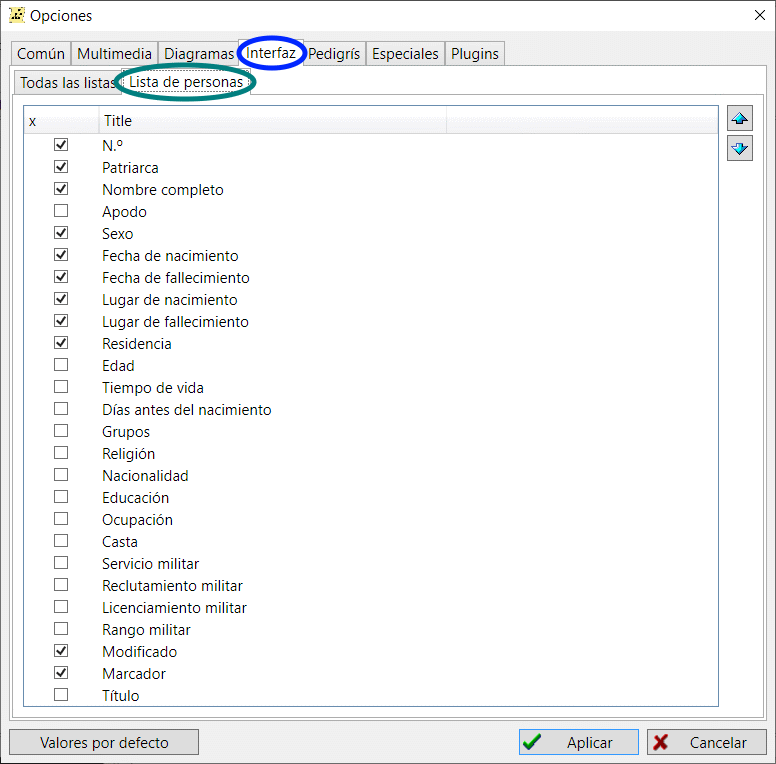
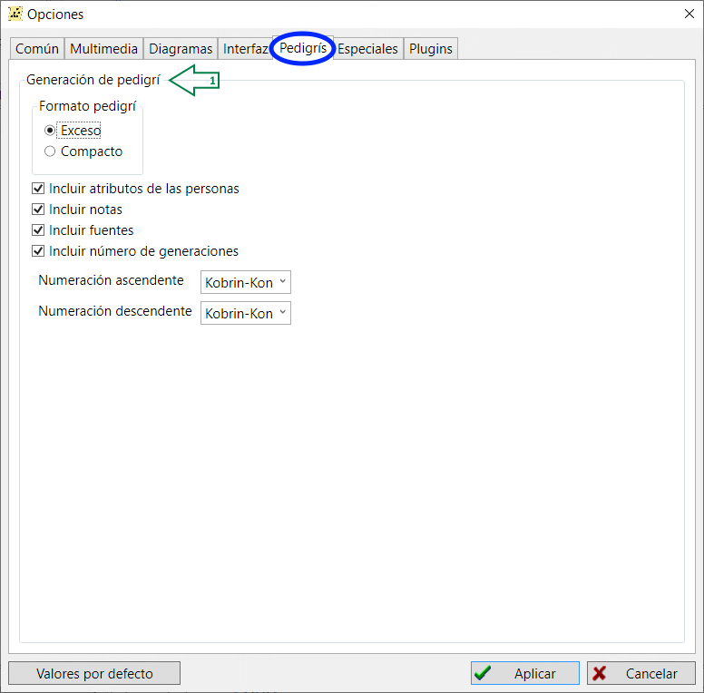
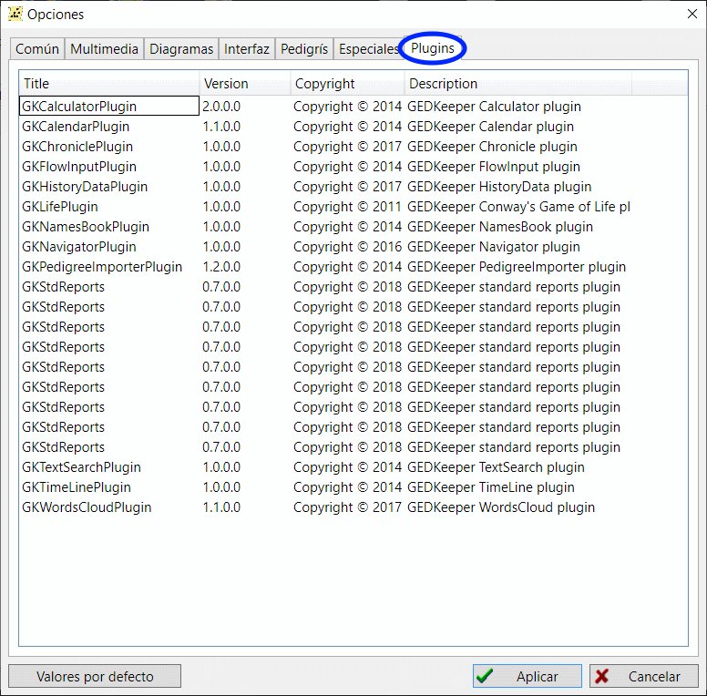

Opciones
Común, Multimedia, Diagramas, Interfaz, Pedigrís, Especiales, Plugins
Común

-
Internet
Configure estos ajustes cuando acceda a Internet a través de un proxy.
-
Usar proxy
Marque esta casilla si utiliza un proxy para acceder a Internet.
-
Servidor
Este es el nombre del servidor
-
Puerto
Este es el número del puerto TCP a usar.
-
Login
Este es el nombre de usuario.
-
Contraseña
La contraseña necesaria para acceder al servidor proxy.
-
Copia de seguridad de archivos
Controla si se realizan copias de seguridad de la base de datos actual.
-
no
Si se selecciona esta opción, no se realiza ninguna copia de seguridad de la base de datos.
-
sólo archivo anterior
Si se selecciona esta opción, sólo se realizará una copia de seguridad cada vez que se guarde la base de datos.
-
de cada revisión de archivo
Si se selecciona, cada vez que se guarda la base de datos se crea una nueva copia de seguridad.
-
Autoguardar cada
Si está marcada, la base de datos se guarda automáticamente cada N minutos.
-
Otros
Aquí hay varias opciones que controlan cómo se maneja el proceso de arranque.
-
Mostrar consejos al inicio
Si está marcada, se mostrarán consejos útiles al inicio, como recordatorios de cumpleaños.
-
Cargar al inicio los archivos abiertos recientemente
Si está marcada, se abre automáticamente el último archivo utilizado.
-
Comprobar actualizaciones automáticamente
Si está marcada, GEDKeeper comprobará si hay una nueva versión del programa disponible. Si se encuentra, se mostrará un mensaje.
-
Idioma
Controla qué idioma se utilizará en la interfaz. No es necesario reiniciar, pero debe hacer clic en "Aplicar" para que surta efecto.
-
Geocodificador
Controla qué sistema cartográfico se utiliza para los mapas generados.

-
Advertir al añadir archivos multimedia desde un soporte extraible
Si está marcada, se mostrará una advertencia si un archivo multimedia está en un soporte extraíble como un CD, DVD o memoria USB.
-
Utilizar MediaPlayer incrustado
Si está marcada, se utilizará el reproductor multimedia de GEDKeeper. Si no está marcada, se utilizará el visor multimedia predeterminado del sistema.
-
Permitir referencias directas a archivos multimedia
Si se marca, los archivos multimedia no se copian en el subdirectorio donde se guarda la base de datos.
En su lugar, se utiliza una referencia directa a la ubicación de los archivos multimedia.
Nota: esto podría dificultar la transferencia de la base de datos a otra ubicación.
Diagramas
Árboles
Hay dos grupos de ajustes para la generación de árboles genealógicos: cómo se representan las personas en el árbol y cómo se visualiza el árbol genealógico.

-
Mostrar individuos en el arbol
Aquí se definen los datos que se verán en el árbol: apellido, nombre y apellidos, fecha de nacimiento y defunción, y qué parte de las fechas.
-
Apellidos
Si está marcada, se mostrará el apellido, si está disponible.
-
Nombre
Si está marcada, se mostrará el nombre, si está disponible.
-
Patronimico
Si está marcada, se mostrará el patronímico, si está disponible.
-
Líneas separadas
Si está marcada, el nombre y el patronímico, si existe, se muestran en líneas separadas. En caso contrario, aparecen en una sola línea separados por un espacio.
-
Fechas de nacimiento
Si está marcada, se mostrará la fecha de nacimiento, si está disponible.
-
Fecha de fallecimiento
Si está marcada, se mostrará la fecha de defunción, si está disponible. Se puede elegir mostrar sólo los años.
-
Fechas de matrimonios
Si se marca, se mostrarán las fechas de matrimonio.
-
Parentesco
Cuando esta opción está activada, cada persona tiene un grado de relación visible—que se calcula en cada reconstrucción del árbol en relación con la persona central del árbol.
-
Símbolos adicionales
Esto hace que los símbolos especiales para algunas categorías de personas.
Hay iconos especiales para veteranos de la Segunda Guerra Mundial, fallecidos,
veteranos del Trabajo, caballero de la Cruz de San Jorge y reprimidos.
Estas categorías se definen en la sección de referencias definidas por el usuario en el editor de personas.
-
Decoración del árbol
Controla algunos elementos gráficos y sombras adicionales.
-
Mostrar retratos
Si está marcada, se muestra el retrato de la persona, si está disponible. Si está marcada, también puede elegir utilizar un retrato predeterminado.
-
Arbol invertido
Si está marcada, el nivel superior del árbol se sitúa en la parte inferior.
-
Ocultar fallecidos en la infancia
Esta opción resulta útil cuando se manejan varias fuentes, ya que puede reducir el número de personas visibles y simplificar mucho la tarea.
-
Mostrar lugares
Si se ha marcado y se han proporcionado una o más ubicaciones, se mostrarán.
-
Ocultar cónyuges desconocidos
Si la casilla está marcada y no se conoce al cónyuge, no se mostrará el marcador de posición del cónyuge.
-
Comprobar el tamaño de árbol permitido
Si está marcada, se comprueba el número máximo de personas en el árbol y la resolución máxima de la imagen.
Por lo general, esta opción no está marcada, ya que GEDKeeper ya no tiene este tipo de restricciones.
-
Decoración
Este conjunto de parámetros define los colores y la fuente principal utilizada en la representación del árbol.
-
Hombre
Haga clic aquí para elegir el color de una persona identificada como hombre.
-
Mujer
Haga clic aquí para elegir el color de una persona identificada como mujer.
-
Sexo desconocido
Si no se ha identificado un sexo, se utilizará este color.
-
Marido divorciado
Un marido (hombre) divorciado se mostrará con este color.
-
Esposa divorciada
Si la persona es una esposa (mujer) divorciada, se utilizará este color.
-
Fuente
Controla qué fuente se utiliza para los gráficos generados. Haga clic aquí y se mostrará una lista de todas las fuentes disponibles en su sistema.
-
Espaciado
Controla un conjunto de parámetrsos para el espaciado en los gráficos.
-
Márgenes
Especifica los márgenes de cada lado del gráfico.
-
Distancia entre ramas
La distancia entre cada rama del gráfico.
-
Distancia entre generaciones
La distancia vertical entre cada generación.
-
Distancia entre cónyuges
La separación horizontal entre los cónyuges.
Círculo de antepasados
Controla las características visuales del gráfico Círculo de Antepasados.

-
Círculo 0
Controla el color del primer círculo (el más interior).
-
Círculo 1
Controla el color del segundo círculo.
-
Círculo 2
Controla el color del tercer círculo.
-
Círculo 3
Controla el color del cuarto círculo.
-
Círculo 4
Controla el color del quinto círculo.
-
Círculo 5
Controla el color del sexto círculo.
-
Círculo 6
Controla el color del séptimo círculo.
-
Círculo 7
Controla el color del octavo círculo.
-
Color del texto
Specifies the color of the text. Be sure it is not the same as "Back color".
-
Color del fondo
Specifies the background color for the text. Be sure it is not the same as "Text color".
-
Color de las líneas
Sets the color for the lines between circle segments.
-
Ocultar segmentos vacíos
Segments without data are not rendered.
-
Texto en arco
Si está marcada, el texto se muestra en forma de arco para seguir la curvatura de un segmento. En caso contrario, el texto se dibuja completamente horizontal o vertical.
Interfaz
Controla las características de la interfaz de usuario.
Todas las listas
Controla las características de cada lista que se muestra.

-
Formato de los nombres en las listas
-
Apellido_Nombre_Patronímico
El apellido, el nombre y el patronímico (o segundo nombre), si existe, se muestran en una columna común.
-
Apellido Nombre_Patronímico
El apellido aparece en una columna separada, y el nombre y el patronímico aparecen en una columna común.
-
Apellido Nombre Patronímico
El apellido, el nombre y el patronímico se muestran en columnas separadas.
-
Formatos de fecha en las listas
-
DD.MM.YYYY
Las fechas se mostrarán en el siguiente orden: día, mes y año. Cada dato está separado por un punto.
-
YYYY.MM.DD
Las fechas se mostrarán en el siguiente orden: año, mes y día. Cada dato está separado por un punto.
-
Mostrar calendario utilizado
Muestra un marcador de calendario para el tipo de fecha que se está utilizando: Gregoriano, Judío o Juliano
-
Mostrar tipo de fecha
Muestra un símbolo junto a la fecha para indicar si es relativa, calculada (o evaluada), anterior, posterior o un intervalo.
-
Apellidos adicionales
-
Apellidos de mujer extendidos
Controla cómo se muestran los nombres de las mujeres si están casadas. Como ejemplo, utilizaremos el nombre Jane cuyo apellido de soltera es Smith y ahora es Johnson.
-
Formato "Soltera (Casada)"
Ejemplo: Jane Smith (Johnson)
-
Formato "Casada (Soltera)"
Ejemplo: Jane Johnson (Smith)
-
Formato "Soltera"
Ejemplo: Jane Smith
-
Formato "Casada"
Ejemplo: Jane Johnson
-
Incluir dirección en las ubicaciones
Si está marcada, se muestra la dirección de un lugar (si está disponible).
-
Resaltar huérfanos
Resaltar las personas sin padres ni familia mejora la navegación por la lista.
Se aplica el siguiente esquema de colores: se utiliza un fondo blanco para las personas con familia y padres,
fondo lino para las personas sin familia y rojo claro para las personas sin padres.
Los colores de fondo no impiden obtener información.
-
Resaltar solteros
Si se marca, se resaltan las personas que no están casadas.
-
Autoordenar hijos
Si está marcada, cuando se muestren los hijos se ordenarán automáticamente por fecha de nacimiento.
-
Autoordenar cónyujes
Si se marca, los cónyuges se ordenan automáticamente por fecha de matrimonio.
Lista de personas
Controla qué características de la persona se muestran y el orden en que se muestran. Para cambiar el orden, basta con seleccionar una característica y utilizar las flechas arriba y abajo.

Pedigrí

-
Generación de pedigrí
-
Formato pedigrí
Controlan el nivel de detalles de la descripción de una persona impresa en el pedigrí. Normalmente se utiliza el formato Compacto, ya que el formato Excesivo puede contener demasiada información innecesaria.
-
Exceso
Si se selecciona, los pedigríes mostrarán información detallada.
-
Compacto
Si se selecciona, se muestra menos información.
-
Incluir atributos de las personas
Checks if a person's life events will be included in the pedigree.
-
Include notes
Si se marca esta opción, los acontecimientos vitales de una persona se incluirán al generar el pedigrí.
-
Incluir fuentes
Determina si la genalogía incluye números de fuentes que hacen referencia a una persona—hay una lista de fuentes en la parte inferior de la genealogía.
-
Incluir número de generaciones
Establece si se muestran subtítulos adicionales del tipo «Generación 1», «Generación 2», etc.
De lo contrario, los textos de la generación siguen sin un desglose visual.
Plugins
Esta es una lista de los plugins que utiliza GEDKeeper. Se muestra únicamente como referencia.
